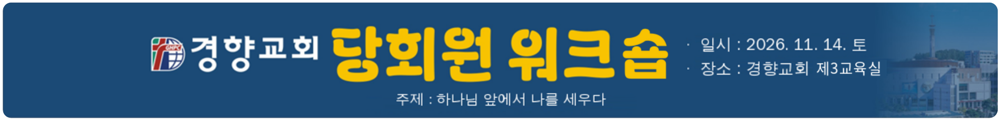

| 시간 | 장소 | 소요 | 내용 | 담당 | 비고 |
|---|---|---|---|---|---|
| 새벽 · 특별 새벽기도 및 조식 | |||||
| 06:00 ~ 07:30 | 트리니티 홀교회식당 | 90분 | 추수감사절 맞이 특별 새벽기도특송 : 당회원 | 여전도회연합회 – 조식 제공메뉴 : 시래기국 | |
| 07:30 ~ 08:00 | 30분 | 휴식 및 준비 | |||
| 오전 · 당회원 워크숍 | |||||
| 08:00 ~ 08:40 | 제3교육실 | 40분 | 교회행정개편위원회 보고 | 문흥식 장로 | 발표 & QnA |
| 08:40 ~ 09:30 | 50분 | 경향관 리모델링 위원회 보고 | 남성우 장로 | 발표 & QnA | |
| 09:30 ~ 10:00 | 만나의 집 | 30분 | 티 타임 & 단체 사진 촬영단체사진 : 당회원 부부 전체사진 촬영 : 미디어부 의뢰 | 만나의 집(사전 주문) 및 (앞) 기념사진 촬영 | |
| 10:00 ~ 11:30 | 제3교육실 | 90분 | 개혁주의란 무엇인가? | 담임목사님 | 아내분들 함께 참석다과 및 온수통 배치 (복도 앞 2곳) |
| 11:30 ~ 12:00 | 30분 | 당회원 부부 기도회 | 담임목사님 | 아내분들 합류 | |
| 오후 · 부부 식사 및 성찬식 준비 | |||||
| 12:00 ~ 12:30 | 이동 | 30분 | 이동 개별 · 자율 운영 및 카풀 | ||
| 12:30 ~ 14:30 | 한우만내고향축산 → 팀별 티 타임 장소 | 120분 | 부부 식사 및 티 타임식사 기도 : 송기봉 장로좌석 : 장로님 · 아내분 블럭만 구분명찰 없음 | 티 타임 팀별 (부부 사전 주문) 배잔·배병팀 : 프레베리 서오릉 카페 배치팀 : 서오릉 이송당베이커리 | |
| 14:30 ~ 15:00 | 이동 | 30분 | 이동 개별 · 자율 운영 및 카풀 | ||
| 15:00 ~ 16:30 | 제3교육실 | 90분 | 성찬식 준비 | 배병 및 배잔팀※ 석식 별도 없음(자율) | |
| 한우만내고향축산 | 경기 고양시 덕양구 서오릉로 433 | ☎ 0507-1452-2775 |
| 프레베리 서오릉 카페 | 경기 고양시 덕양구 서오릉로 425 | ☎ 0507-1385-3933 |
| 서오릉 이송당베이커리 | 경기 고양시 덕양구 서오릉로 406-20 (1·2층) | ☎ 02-356-7826 |
| 구분 (지출) | 인원 | 단가 | 금액 |
|---|---|---|---|
| 중식대 | 60 | 50,000 | 3,000,000 |
| 티타임(중식 후) | 60 | 10,000 | 600,000 |
| 만나의 집 | 60 | 3,500 | 210,000 |
| 간식(고급 사양) | 60 | 10,000 | 600,000 |
| 예비비(사무비 등) | 90,000 | ||
| 합 계 | 4,500,000 | ||